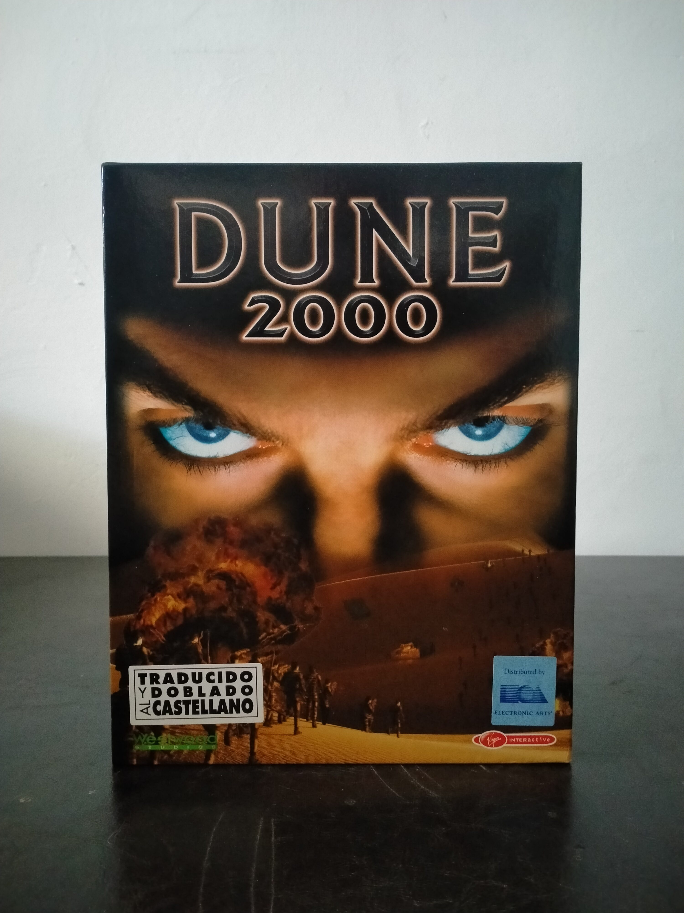

Ficha #000148
Dune 2000
Dune 2000 es un juego de estrategia en tiempo real desarrollado por Westwood Studios y publicado en 1998 como reinterpretación moderna de Dune II, título fundamental en la consolidación del género RTS. Mantiene el conflicto por el control de Arrakis y la Especia Melange entre las casas Atreides, Harkonnen y Ordos, combinando construcción de bases, extracción de recursos y producción de unidades con campañas diferenciadas para cada facción. Técnicamente actualizó la fórmula original con gráficos de 16 bits de color, una interfaz y mecánicas influenciadas por la experiencia adquirida por Westwood con Command & Conquer y secuencias cinematográficas con actores reales, característica habitual de las grandes producciones del estudio durante los años noventa. Esta edición física española en formato Big Box fue publicada por Virgin Interactive y distribuida localmente por Electronic Arts Software, con juego traducido y doblado al castellano. Constituye una pieza significativa para documentar tanto la evolución de la estrategia en tiempo real como la adaptación al videojuego del universo creado por Frank Herbert.
- Formato
- Big Box
- Plataforma
- Win95 Win98
- Género
- Estrategia en tiempo real RTS Ciencia ficción Estrategia militar
- Serie
- Todos Big Box
- Desarrollador
- Westwood Studios
- Distribuidor
- Virgin Interactive Entertainment, Electronic Arts Software
- EAN
- 5028587100918
Contenido de la edición
- Caja Big Box
- CD-ROM en caja Jewel Case
- Manual en castellano
- Hoja de soporte técnico Westwood
- Tarjeta de registro de Electronic Arts Software
- Documentación de licencia y garantía
Preservación
- Protección
- Verificación de CD
- Formato recomendado
- ISO
- Jugable en virtualización
- Sí
Se recomienda preservar el CD-ROM original mediante una imagen completa ISO y digitalizar la documentación impresa asociada. La ejecución en entorno virtual es viable mediante Windows 95/98, manteniendo montada la imagen del CD cuando sea necesaria la comprobación de presencia del soporte original.